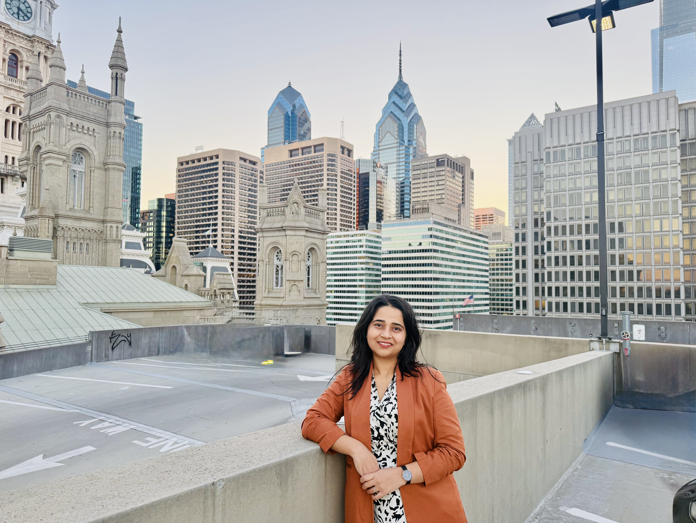
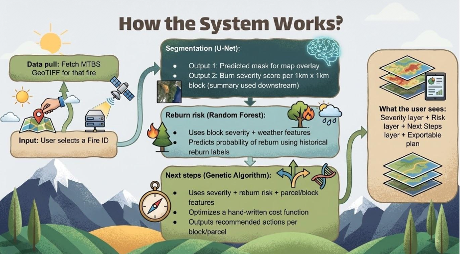

Hello, I'm
Prajakta Shevakari
Backend Software Engineer
About me
Now, as a Master's student at Johns Hopkins University, my research bridges those robust production environments with data-driven Natural Language Processing and Computer Vision models. I am on a mission to learn how Applied Machine Learning can be integrated securely and efficiently into the backend architectures I've engineered my entire career.

Beyond the Code
Iyengar Yoga
Practicing Iyengar Yoga and meditation is key to my mental and physical well-being — it's where my technical focus begins.
Movement & Expression
Trained in Indian classical dance. I love hiking, roller skating, Pickleball, and finding new ways to stay active.
Teaching for Good
Volunteered teaching Mathematics and elementary CS to underprivileged school students. Mentoring learners in technical foundations.
Education & Skills
Johns Hopkins University
Master of Science in Computer Science
Focus: Artificial Intelligence, Machine Learning, Natural Language Processing, ML: AI System Design & Development, Future of Work with AI, Human Language Technology, Software System Design, Parallel Computing for Data Science
Pune Institute of Computer Technology
Bachelor of Computer Engineering
Focus: Data Structures and Problem Solving, Cloud Computing, Business Analytics and Intelligence, High-Performance Computing, Computer Networks, Advanced Computer Programming, Design and Analysis of Algorithms
Career Trajectory
Research & Projects
TerraNova: Post-Wildfire Recovery
Three-stage ML platform turning satellite imagery into recovery actions — U-Net segmentation, Random Forest risk, and Genetic Algorithm optimization.
View Project DetailsD-FuseSmileNet
Hadamard fusion of transformer embeddings with physiological D-Markers to distinguish spontaneous from posed smiles, achieving SOTA across 4 benchmarks.
View Project DetailsClinical NER Annotation
GPT-4 with Chain-of-Thought prompts to label Bengali clinical text. Tripled F1 score and closed the gap to human supervision without manual labeling.
View Project DetailsBMC Network Analytics
Modular Java/Akka platform with ML models and Yellowfin BI dashboards — static reports replaced with predictive intelligence for SecOps.
View Project DetailsTerraNova: Post-Wildfire Recovery Platform
A Data-Driven Framework for Sustainable Use of Barren and Degraded Lands. Less than 2% of the US wildfire budget goes to recovery. TerraNova closes that gap with a pipeline that produces parcel-level severity maps, reburn risk scores, and optimized recovery recommendations.
📄 Read Full PDF Report
Methodology & Architecture
- Stage 1 — U-Net: Trained on 5,773 MTBS patches. Achieved 0.99 ROC-AUC and 540ms P50 latency.
- Stage 2 — Random Forest: Parcel-level features joining severity output with USGS covariates to predict reburn probabilities.
- Stage 3 — Genetic Algorithm: Multi-criteria optimization assigning recovery actions per parcel — balancing risk, soil stability, and cost.
D-FuseSmileNet
Enhancing Spontaneous Smile Recognition via Hadamard Fusion of Handcrafted and Deep-Learning Features. We fuse transformer embeddings with hand-crafted D-Marker features to identify genuine smiles.
📄 Read Full PDF Report
Technical Approach
- Problem: Spontaneous vs. posed smiles differ by subtle spatiotemporal muscle activations that deep networks alone struggle with.
- Innovation: Direct multiplicative (Hadamard) fusion between transformer and D-Marker features — no auxiliary loss weighting needed.
- Result: Achieved SOTA on 4 benchmarks. 100% accuracy on BBC, outperforming prior models by +5.0%.
Clinical NER Annotation Pipeline
In-Context Learning and Chain-of-Thought Prompting for Low-Resource Clinical Texts. We used GPT-4 with reasoning to replace manual labeling for Bengali clinical texts.
📄 Read Full PDF Report
Methodology
- Corpus: Bangla-HealthNER — 144K+ sentences of consumer health queries.
- Approach: By asking the model to verbalize its reasoning (CoT), we almost tripled the token-level F1 score compared to plain prompting.
- Downstream: BanglishBERT trained on synthetic labels reached 46.0 macro F1 — closing two-thirds of the gap to full supervision with 0 manual labels.
BMC Network Automation Analytics
Deriving & Reporting Intelligent Insights for BMC Network Automation. Turn configuration and compliance data into live intelligence for network operations.
📄 Read Full Docx Report
System Design
- Architecture: Concurrent, modular Java services exposed as RESTful APIs; scalable via Akka actor model.
- Pipeline: Custom WEKA and R workflows for clustering, regression, and association mining.
- Visualization: Yellowfin BI dashboards with interactive, predictive reporting for SecOps teams.
Let's Connect
Whether you're tackling complex distributed systems, orchestrating large-scale cloud migrations, or bridging the gap between robust backends and applied machine learning — I'm always excited to talk tech, explore collaborations, or just exchange ideas. Let's build something impactful together.